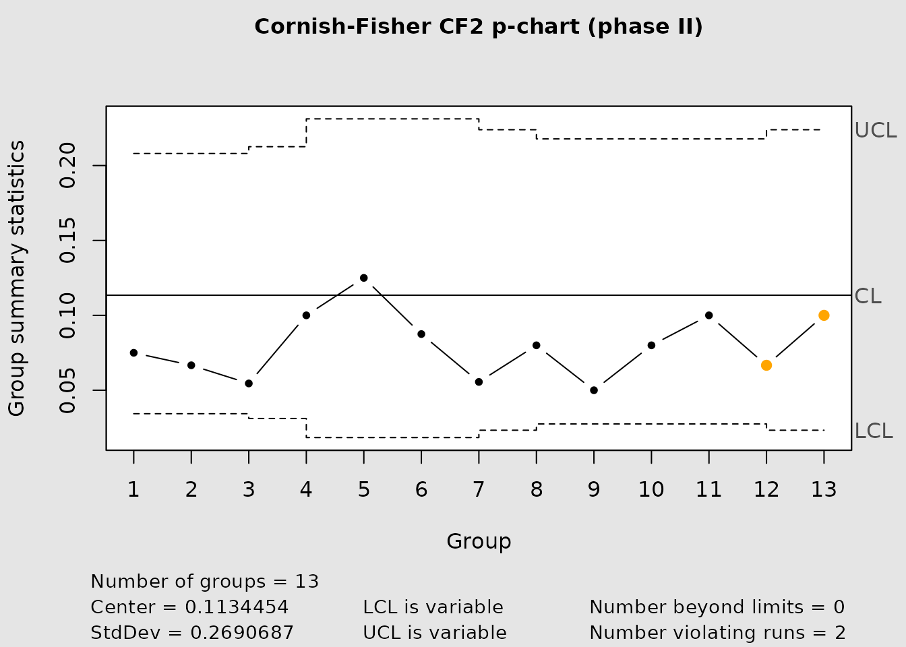
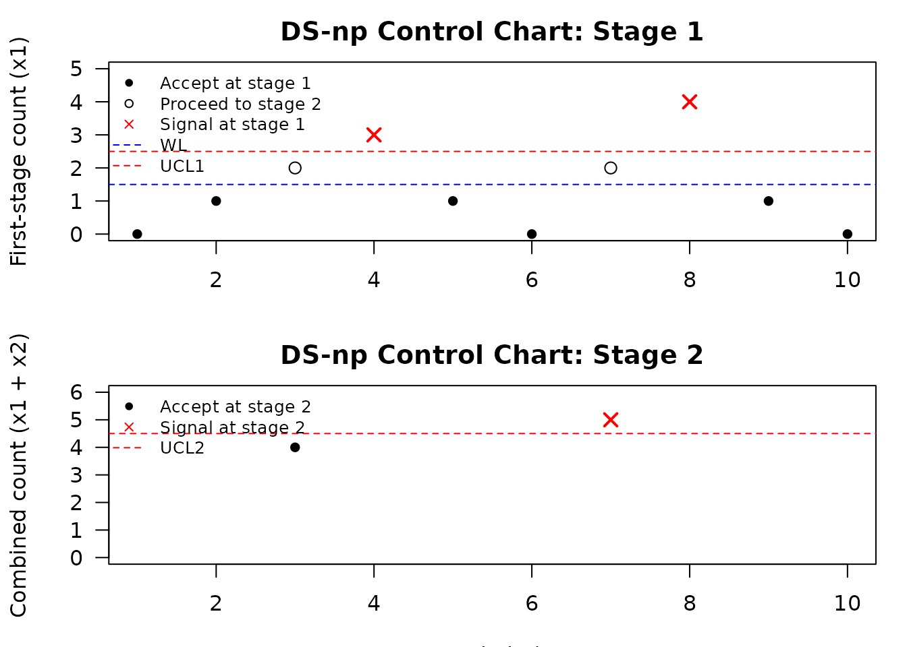

When to use IQCC: exact and corrected control charts
Source:vignettes/iqcc-positioning.Rmd
iqcc-positioning.RmdPurpose
IQCC implements Improved Quality Control Charts: control charts with exact, corrected, standardized, or simulation-based limits for situations where classical Shewhart-type approximations may be poorly calibrated.
The package is not intended to replace general-purpose statistical process control packages. Instead, it is useful when the monitoring statistic is bounded, discrete, skewed, strongly non-normal, or based on small samples. In those settings, the usual three-sigma limits can produce a false-alarm probability that differs meaningfully from the nominal value.
Positioning in the R ecosystem
IQCC is a specialized package for exact and corrected control-chart limits, especially for small samples, rare nonconformities, asymmetric statistics, and selected multivariate monitoring problems.
Use a general SPC package when the goal is a broad control-chart workflow. Use IQCC when the main concern is whether classical limits are statistically well calibrated for the distribution and sample size at hand.
Current implemented methods
The current package includes:
-
cchart.R()andcchart.S()for range and standard-deviation charts; -
pchart_limits(),pchart_alpha_risk(), andcchart.p(); -
uchart_limits(),uchart_alpha_risk(), andcchart.u(); - the DS-np design and monitoring family;
- Hotelling T-squared Phase I and Phase II functions;
- generalized-variance limits, risk diagnostics, and charts;
- auxiliary
tr(V)trace-statistic limits, risk diagnostics, and charts.
Executed example: corrected p-chart limits
The chunk below is evaluated when the vignette and the pkgdown site are built. It prints the limits and their exact binomial false-alarm probability.
data(binomdata)
p0 <- sum(binomdata$Di[1:12]) / sum(binomdata$ni[1:12])
lim_p <- pchart_limits(p = p0, n = 20, type = "cf2")
risk_p <- pchart_alpha_risk(
p = p0,
n = 20,
lcl = lim_p$lcl,
ucl = lim_p$ucl
)
data.frame(
p0 = p0,
lcl = lim_p$lcl,
center = lim_p$center,
ucl = lim_p$ucl,
actual_alpha = risk_p,
arl0 = ifelse(risk_p == 0, Inf, 1 / risk_p)
)
#> p0 lcl center ucl actual_alpha arl0
#> 1 0.1134454 0 0.1134454 0.3653831 0.0009758464 1024.751The operational chart itself is also executed and produces a figure in the published article.
cchart.p(
x1 = binomdata$Di[1:12],
n1 = binomdata$ni[1:12],
type = "cf2",
x2 = binomdata$Di[13:25],
n2 = binomdata$ni[13:25]
)
Executed example: DS-np operating characteristics
The published small-sample design can be evaluated directly without an expensive search.
n1 <- 34
n2 <- 162
wl <- 1.5
ucl1 <- 2.5
ucl2 <- 4.5
p0 <- 0.005
p1 <- 0.0075
perf_dsnp <- data.frame(
quantity = c("ARL0", "ARL1", "ASS0"),
value = c(
dsnp_arl(p0, n1, n2, wl, ucl1, ucl2)$arl,
dsnp_arl(p1, n1, n2, wl, ucl1, ucl2)$arl,
dsnp_ass(p0, n1, n2, wl, ucl1)$ass
)
)
perf_dsnp
#> quantity value
#> 1 ARL0 803.41143
#> 2 ARL1 193.22286
#> 3 ASS0 35.93534A compact search is used in the vignette so that CI remains fast while still executing the design algorithm.
small_search <- dsnp_limits(
p0 = 0.05,
n1 = 5,
n2 = 10,
alpha = 0.05,
p1 = 0.10,
max_results = 5
)
small_search$best[, c("wl", "ucl1", "ucl2", "arl0", "arl1", "ass0")]
#> wl ucl1 ucl2 arl0 arl1 ass0
#> 1 0.5 1.5 2.5 24.91743 5.951221 7.036266The chart is built with explicit limits, which makes the displayed decision rule reproducible.
x1 <- c(0, 1, 2, 3, 1, 0, 2, 4, 1, 0)
x2 <- c(NA, NA, 2, NA, NA, NA, 3, NA, NA, NA)
chart_dsnp <- cchart.DSnp(
x1,
n1 = 10,
n2 = 20,
p0 = 0.05,
x2 = x2,
wl = 1.5,
ucl1 = 2.5,
ucl2 = 4.5,
plot = TRUE
)
chart_dsnp$performance
#> $arl0
#> [1] 58.35236
#>
#> $ass0
#> [1] 11.4927
#>
#> $p_signal0
#> [1] 0.01713727Executed example: generalized variance
gv_comparison <- do.call(
rbind,
lapply(c("normal", "cf", "exact"), function(method) {
limits <- gv_limits(
n = 10,
p = 2,
det_sigma = 0.5320,
type = method
)
data.frame(method = method, lcl = limits$lcl,
center = limits$center, ucl = limits$ucl)
})
)
gv_comparison
#> method lcl center ucl
#> 1 normal 0 0.4728889 1.428685
#> 2 cf 0 0.4728889 2.160305
#> 3 exact 0 0.4728889 2.153629
set.seed(123)
gv_data <- array(rnorm(8 * 8 * 2), dim = c(8, 8, 2))
cchart.GV(
gv_data,
Sigma = diag(2),
type = "exact",
plot = TRUE
)#> Generalized Variance Control Chart
#> Dimension: p = 2 ; subgroup size n = 8
#> Subgroups: 8 (Phase I: 8 ; Phase II: 0 )
#> Limits: exact / upper ; nominal alpha = 0.0027
#> Covariance: supplied Sigma
#> LCL = 0 ; center = 0.8571 ; UCL = 4.622
#> Signals: 0
cat("<!-- IQCC_EXECUTED_POSITIONING -->\n")